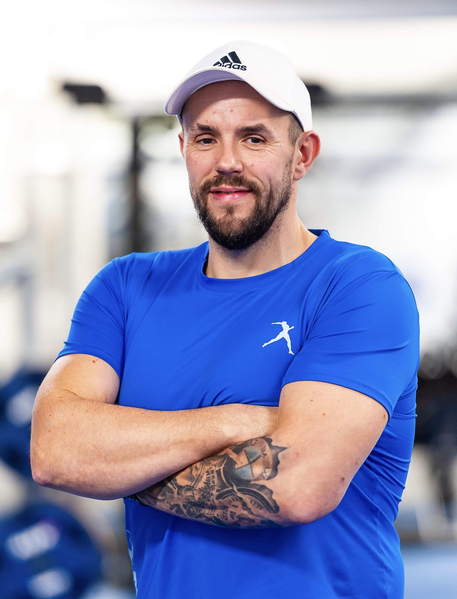
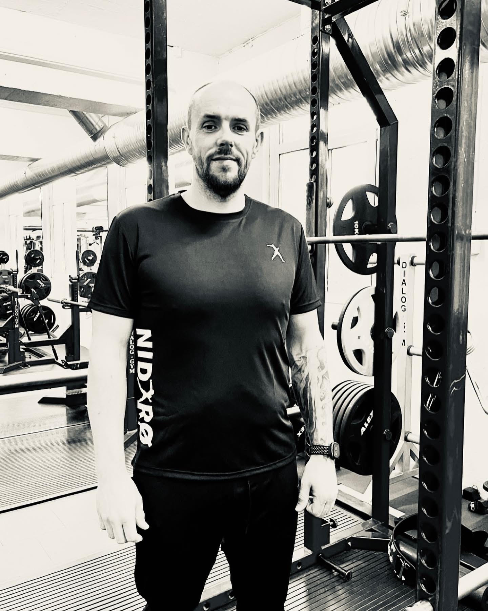

Personleg trening heime
Eg kjem heim til deg og tilpassar treninga til plassen, utstyret, kroppen og kvardagen din. Du treng ikkje eige eit fullt treningsrom for å kome i gang.
Les meir om personleg trening heimePersonleg oppfølging i Bjørnafjorden og Bergen
Personleg trening og livsstilsrettleiing for deg som ønskjer å kome i form, bli sterkare i kvardagen og kjenne deg betre – heime eller ute, i ditt tempo.
Gratis og uforpliktande samtale på 15 minutt.

Nær, privat og tilpassa
Du får personleg oppfølging der du kjenner deg trygg. Vi tek utgangspunkt i livet ditt, forma di og det du ønskjer å få til – utan prestasjonspress eller rigide system.
synest treningssenter kan vere ubehageleg eller overveldande
har trena før, men har falle ut av gode rutinar
vil bli sterkare og tryggare i kvardagen
ønskjer meir energi og overskot
vil ta vare på kroppen og funksjonen i åra som kjem
ønskjer å vere meir aktiv saman med barn eller barnebarn
treng struktur, støtte og ein avtale som faktisk blir gjennomført
Det som verkeleg tel
Trening handlar ikkje berre om det du klarer på ei treningsøkt. Det handlar om å kunne bere handleposane, kome seg opp frå golvet, gå tur, arbeide i hagen og vere aktiv saman med dei du er glad i. Rett tilpassa aktivitet kan bidra til å halde ved lag styrke, balanse, rørsle og sjølvstende.
«Fleire gode år med dei som betyr mest.»Les meir om å bli sterkare gjennom livet
Tenester
Eg kjem heim til deg og tilpassar treninga til plassen, utstyret, kroppen og kvardagen din. Du treng ikkje eige eit fullt treningsrom for å kome i gang.
Les meir om personleg trening heimeVi kan møtast ute på ein avtalt stad og bruke nærområdet til styrke, kondisjon, balanse og aktivitet.
Du får hjelp til å lage realistiske rutinar for aktivitet, kosthald og kvardag. Ingen ekstremkurar og ingen ferdig mal som alle skal passe inn i.
Les meir om livsstilsendringPakkar og prisar
Alle pakkar blir tilpassa nivået, måla og kvardagen din.
Introduksjonspakke for nye kundar
3 900 kr
For deg som ønskjer ein trygg og grundig start.
Fast oppfølging
5 900 kr per månad
Fast oppfølging for deg som ønskjer struktur og kontinuitet.
Tett oppfølging
10 900 kr per månad
For deg som ønskjer meir støtte og tettare oppfølging.

Om Bjørn
Eg er utdanna personleg trenar gjennom AFPT, kosthaldsrettleiar gjennom AFPT og mental trenar. Før eg byrja å arbeide med menneske og trening, jobba eg som mekanikar. Den bakgrunnen har gjort meg praktisk, løysingsorientert og oppteken av at ting skal fungere i den verkelege verda.
Eg har sjølv erfaring med angst, depresjon og periodar der overskot, struktur og retning ikkje har kome av seg sjølv. Det har lært meg at endring sjeldan berre handlar om viljestyrke.
Eg er ikkje psykolog, og eg driv ikkje behandling. Men eg møter deg med forståing, tolmod og respekt. Vi finn ei løysing som tek utgangspunkt i livet ditt, kroppen din og det du faktisk ønskjer å få til.
Du treng ikkje prestere for å møte meg. Du treng berre å vere villig til å ta det første steget. Det du deler med meg, blir møtt diskret og respektfullt.
«Motivasjon kjem og går.
Eg kjem uansett.»
Slik fungerer det
Send inn skjemaet eller ring meg. Du treng ikkje ha ein ferdig plan.
Vi tek ein uforpliktande samtale på om lag 15 minutt.
Vi møtest heime hos deg eller ute og snakkar om mål, erfaring og kva som kan passe.
Du får ei trygg og realistisk oppfølging som kan justerast undervegs.
Område og reise
Eg tilbyr vanlegvis oppfølging i Bjørnafjorden, Bergen sør, Fana og delar av Bergen sentrum, så langt det er praktisk mogleg.
Eventuelle tillegg blir alltid avtalte på førehand.
Kontakt
Du treng ikkje vite nøyaktig kva du treng. Fortel kort kva du ønskjer, så tek vi ein uforpliktande prat.